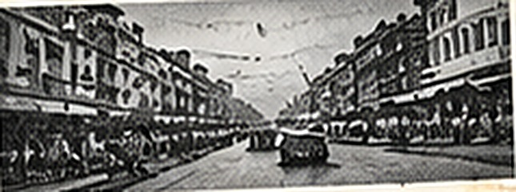
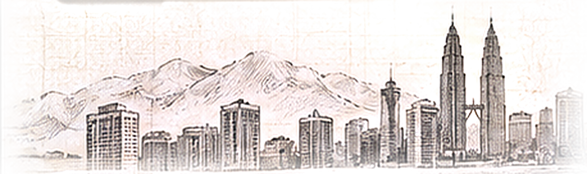
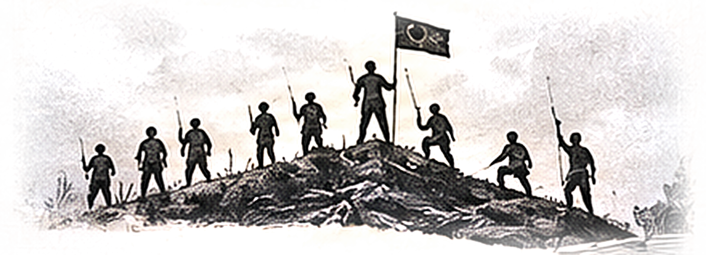
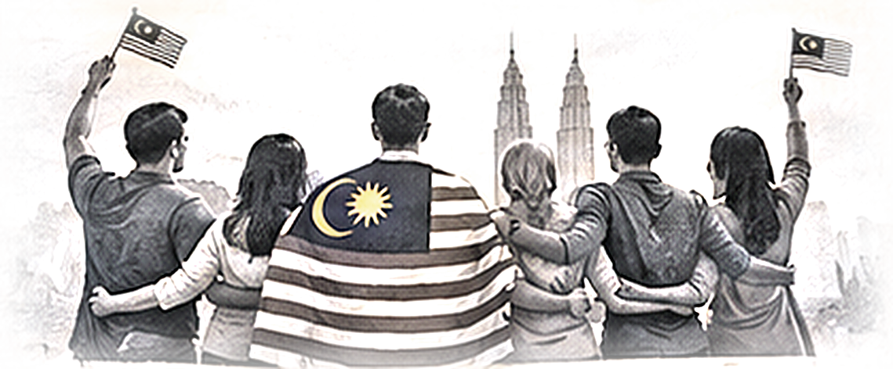

Tetapi kita jangan sesekali lupa segala nikmat yang kita kecapi hari ini bukan datang dengan mudah.
02 / 04
Pengorbanan
BukanDatang DenganMudah
Ia hasil daripada perjuangan, pengorbanan dan kesatuan seluruh rakyat yang sanggup berkorban demi kebebasan, kemerdekaan dan masa depan negara.

31.08.1957

03 / 04
Semangat Mereka
KEBERANIAN
KEBIJAKSANAAN
KEPIMPINAN
Semangat kebersamaan, kebijaksanaan dan kepemimpinan mereka harus terus menjadi inspirasi kepada generasi hari ini.


04 / 04
Dahulu
MerekaBerjuang
Hari Ini
TanggungjawabKita
Kita dituntut mereka berjuang untuk mempertahankan kemerdekaan, hari ini menjadi tanggungjawab kita untuk mempertahankannya dan menjaga keharmonian di negara Malaysia.